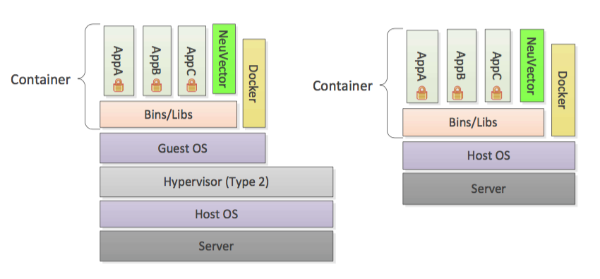

5.x Overview
The Full Life-Cycle Container Security Platform
|
These docs describe the 5.x (Open Source) version. The 5.x images are accessible from Docker Hub with the appropriate tag, e.g. |
SUSE® Security provides a powerful end-to-end container security platform. This includes end-to-end vulnerability scanning and complete run-time protection for containers, pods and hosts, including:
-
CI/CD Vulnerability Management & Admission Control. Scan images with a Jenkins plug-in, scan registries, and enforce admission control rules for deployments into production.
-
Violation Protection. Discovers behavior and creates a whitelist based policy to detect violations of normal behavior.
-
Threat Detection. Detects common application attacks such as DDoS and DNS attacks on containers.
-
DLP and WAF Sensors. Inspect network traffic for Data Loss Prevention of sensitive data, and detect common OWASP Top10 WAF attacks.
-
Run-time Vulnerability Scanning. Scans registries, images and running containers orchestration platforms and hosts for common (CVE) as well as application specific vulnerabilities.
-
Compliance & Auditing. Runs Docker Bench tests and Kubernetes CIS Benchmarks automatically.
-
Endpoint/Host Security. Detects privilege escalations, monitors processes and file activity on hosts and within containers, and monitors container file systems for suspicious activity.
-
Multi-cluster Management. Monitor and manage multiple Kubernetes clusters from a single console.
Other features of SUSE® Security include the ability to quarantine containers and to export logs through SYSLOG and webhooks, initiate packet capture for investigation, and integration with OpenShift RBACs, LDAP, Microsoft AD, and SSO with SAML. Note: Quarantine means that all network traffic is blocked. The container will remain and continue to run - just without any network connections. Kubernetes will not start up a container to replace a quarantined container, as the api-server is still able to reach the container.
Security Containers
The SUSE® Security run-time container security solution contains four types of security containers: Controllers, Enforcers, Managers, and Scanners. A special container called the Allinone is also provided to combine the Controller, Enforcer, and Manager functions all in one container, primarily for docker native deployments.
SUSE® Security can be deployed on virtual machines or on bare metal systems with a single os.

Controller
The Controller manages the SUSE® Security Enforcer container cluster. It also provides REST APIs for the management console. Although typical test deployments have one Controller, multiple Controllers in a high-availability configuration is recommended. 3 controllers is the default in the Kubernetes Production deployment sample yaml.
Enforcer
The Enforcer is a lightweight container that enforces the security policies. One enforcer should be deployed on each node (host), e.g. as a Daemon set.
|
For Docker native (non Kubernetes) deployments the Enforcer container and the Controller cannot be deployed on the same node (except in the All-in-One case below). |
Manager
The Manager is a stateless container that provides a web-UI (HTTPS only) console for users to manage the SUSE® Security security solution. More than one Manager container can be deployed as necessary.
All-in-One
The All-in-One container includes a Controller, an Enforcer and a Manager in one package. It’s useful for easy installation in single-node or small-scale deployments.
Scanner
The Scanner is a container which performs the vulnerability and compliance scanning for images, containers and nodes. It is typically deployed as a replicaset and can be scaled up to as many parallel scanners as desired in order to increase the scanning performance. The Controller assigns scanning jobs to each available scanner in a round-robin fashion until all scans are completed. The scanner also contains the latest CVE database and is updated regularly by SUSE® Security.
Updater
The Updater is a container which when run, updates the CVE database for SUSE® Security. SUSE® Security regularly publishes new scanner images to include the latest CVE for vulnerability scans. The updater re-deploys all scanner pods by taking the deployment to zero and scaling it back up, forcing a pull of an updated scanner image.
Architecture
Here is a general architecture overview of SUSE® Security. Not shown is the separate scanner container, which can also be run as a stand-alone pipeline scanner.

Deployment Examples
For common deployment patterns and best practices see the Onboarding/Best Practices section.
All-in-One and Enforcers
This deployment is ideal for single-node or small-scale environments, for example for evaluation, testing, and small deployments. An All-in-One container is deployed on one node, which can also be a node with running application containers. An Enforcer can be deployed on all other nodes, with one Enforcer required on each node you wish to protect with SUSE® Security. This is also useful for native Docker deployments where a controller and enforcer cannot run on the same host.
Controller, Manager and Enforcer Containers
This is a more generic deployment use case which consists one or more Controllers, one Manager and a set of Enforcers. The Controller and Manager can be deployed on the same node or on different nodes than the Enforcer.
All-in-One Only
You can deploy just the allinone container for registry scanning, using the Jenkins plug-in, or simple one node testing of SUSE® Security.
Controller Only
It is possible to deploy a single Controller container and/or scanner to manage vulnerability scanning outside a cluster, for example for use with the Jenkins plug-in. Registry scanning can also be performed by the Controller using the REST API exclusively, but typically a Manager container is also desired in order to provide console based configuration and results viewing for registry scanning.